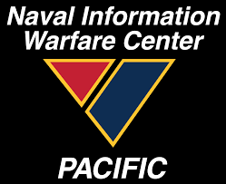
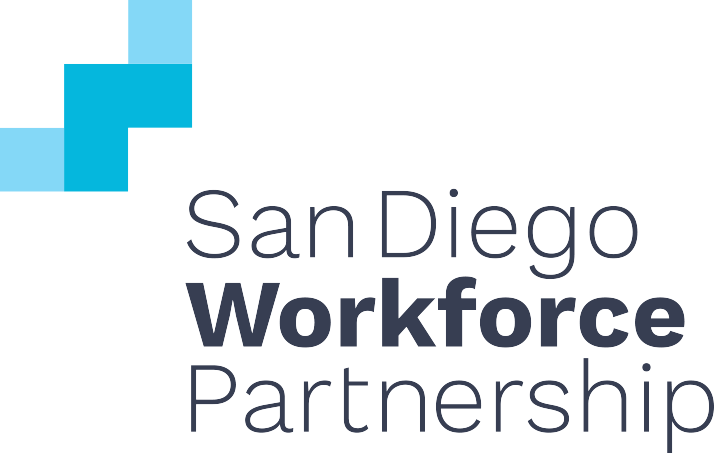

Experience
SDSU Artificial Intelligence Laboratory
Position: Software Development Intern
August 2021 - Present
- Collaborate with developers to develop Augmented Reality applications on projects for U.S Government organizations.
- Utilize the Unreal Engine environment to create software using frameworks for the Microsoft Hololens equipment.
- Create reports to present progress and tasks accomplished at weekly meetings to update our laboratory director.
Naval Information Warfare Center Pacific

Position: Cybersecurity & Hub Administrator
December 2020 - August 2021
- Improve the organization’s member data sheet (3500+ members) into a streamlined method of access for the CSWF Team
- Revise and edit the Cybersecurity Hub Webpage layout with the Jira Confluence Macros for improving user experience.
- Review, analyze and document specific CSWF and user account management metrics to assist the Cyber IT/CSWF-PM.
San Diego Workforce Partnership - TechHire

Position: TechHire Intern
March 2020 - May 2020
- Help program members improve their resumes and help them prepare for their career endeavors in the tech sector
- Utilize MS Office and Salesforce tools to implement case management organization and execution for the department lead
- Sit in on interviews with program candidates to help them navigate their paperwork for their news jobs and internships